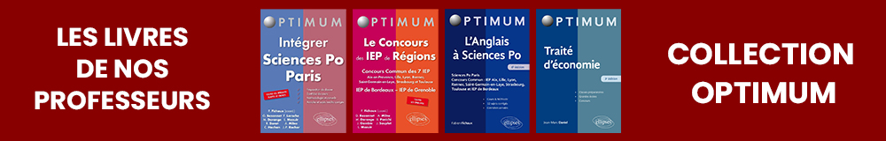

En 2020, Sciences Po Paris a introduit une réforme majeure de ses modalités d’inscription en première année qui peut se résumer par les points principaux suivants :
La sélection comporte deux phases : une phase d’admissibilité et une phase d’admission.
La phase d’admissibilité consiste en l’étude et l’évaluation du dossier de candidature du candidat. Ce dernier comporte les éléments du dossier scolaire mais aussi sa lettre de motivation, élément central pour l’admission. Sciences Po souhaite non seulement attacher de l’importance aux savoirs académiques mais aussi aux profils des candidats (centres d’intérêts, activités extra-scolaires, culturelles, associatives, etc.) et évidemment leur intérêt pour les études à Sciences Po.
La phase d’admission comporte une épreuve orale : l’entretien de motivation.
Ce processus de sélection s’inscrit dans le calendrier général Parcoursup :
L’objectif ultime de la réforme est de recruter les meilleurs étudiants dès leur sortie du baccalauréat et de les former dans un cycle d’excellence en 5 ans. Les pourcentages de réussite (entre 10% et 15%) et le nombre grandissant de candidats (de l’ordre de 7000).
Intégrer Sciences Po demande une préparation rigoureuse autour de 6 axes fondamentaux :
Présenter un dossier de candidature robuste
Acquérir un vaste champ de connaissances académiques
Etre capable d’utiliser ses connaissances dans le cadre d’une réflexion personnelle convaincante, argumentée et aboutie
Se construire une culture générale solide
Développer une méthodologie de travail performante (l’ « esprit Sciences Po »)
Faire montre de curiosité et d’une ouverture d’esprit attestée par des activités riches et nourries dans des domaines non-scolaires.
Se spécialiser dans la préparation au concours de Sciences Po est notre marque de fabrique. Se spécialiser est un choix : celui de l’excellence qui fait de notre préparation un facteur de réussite pour les étudiants qui souhaitent intégrer Sciences Po.
De par notre ultra-spécialisation, nous nous sommes entourés des meilleurs enseignants pour chacune des matières. Nos professeurs ont une connaissance approfondie des épreuves. Ils enseignent pour la plupart en classes préparatoires ou à Sciences Po, conçoivent et corrigent des examens du Supérieur. Reconnus pour leurs compétences mais aussi pour leur capacité à faire passer le savoir, ils ont écrit plusieurs ouvrages qui font aujourd’hui référence sur les épreuves de l’examen d’entrée à Sciences Po.
Notre objectif premier est d’obtenir les meilleurs résultats d’admission au concours des différents IEP. Cela passe par une attention permanente apportée aux progrès réalisés par les élèves et cela implique une très forte disponibilité de nos enseignants et des équipes.
Préparer un examen aussi sélectif que celui de Sciences Po demande un accompagnement qui va au-delà des cours dispensés par les professeurs. L’"esprit de notre Prépa Sciences Po" consiste à aider l’élève tout au long de sa phase de préparation pour l’aider à progresser de façon réelle et durable.
La préparation est coordonnée par un professeur diplômé de Sciences Po Paris, qui y enseigne également depuis 15 ans et qui a écrit plus d’une vingtaine d’ouvrages de référence sur la préparation des concours de l’Enseignement Supérieur. Il est le « point de contact » des élèves et des parents tout au long de l’année.